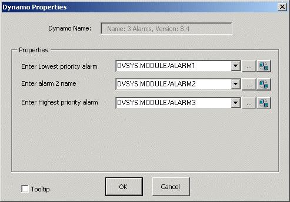
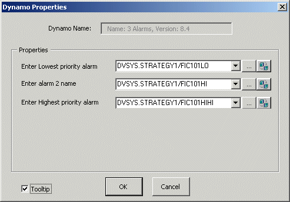

Alarm dynamos
In addition to the dynamos for the function blocks themselves, FnkBlks contains six alarm dynamos. These dynamos display information about alarms whose active/inactive status is determined by a given function block. There are six such dynamos because function blocks can contain up to six alarm condition parameters.
Suppose you create a module with two PID blocks and five alarm parameters. Three of those alarm parameters reference condition parameters in the first PID block, and two alarm parameters reference condition parameters in the second PID block. The alarm parameters have been given names that distinguish similar alarms in the two blocks. You would use the Alarms_3 dynamo to show information about the module alarms tied to the first PID block. You would use the Alarms_2 dynamo to show information about the alarms for the second PID block.
In DeltaV Operate run mode, the alarm dynamo is invisible unless there is an active or unacknowledged module alarm set off by that particular function block. In that case, the alarm word of the highest priority alarm is shown. The background is the priority color, and it blinks if the alarm is unacknowledged. Click a visible alarm word to acknowledge all the alarms set off by that particular function block. However, doing so does not acknowledge other alarm parameters in that module.
After a function block dynamo is added to a process display in Control Studio, you might want to place an alarm dynamo near the function block dynamo. For example, suppose the function block dynamo is for a PID function block whose usage name is FIC101 in a module named STRATEGY1. The module contains other PID function blocks and many alarm parameters. Three of those alarm parameters get their active/inactive status from condition parameters in FIC101. Suppose you name those alarm parameters FIC101LO, FIC101HI, and FIC101HIHI. When you drag and drop the Alarms_3 dynamo on the process display, the dialog in the following figure appears.

Enter the paths to the three alarm parameters in the order indicated by the prompts. Enter the lowest priority alarm first and the highest priority alarm last. If more than one alarm is active or unacknowledged, the alarm word of the higher (or highest) priority alarm is visible to the operator (using DeltaV Operate run mode). In this instance, the term priority does not refer to the configuration of the alarm parameter itself. If two alarms were to have the same priority in the configuration of the alarm parameter, you would determine which one had priority for visibility by entering the higher priority path in a lower edit box on the dialog. The following figure shows the Dynamo Properties dialog with the actual alarm parameter paths.

Once an alarm dynamo is on the process display in DeltaV Operate configure mode, you can set the background color that will blink in DeltaV Operate run mode. Keep in mind that an unacknowledged alarm blinks in the priority color. If you want the alternating blink color to be the background color of your process display, perform the following steps:
Select the dynamo on the process display.
Right click and select Animations from the context menu.
Select the Color tab from the animations dialog.
Select the background color (click the <...> button and pick a color)
Click OK twice to return to the process graphic. The dynamo's background color is displayed.
If the background color is not displayed, select the object, right click and select Display BackDrop.